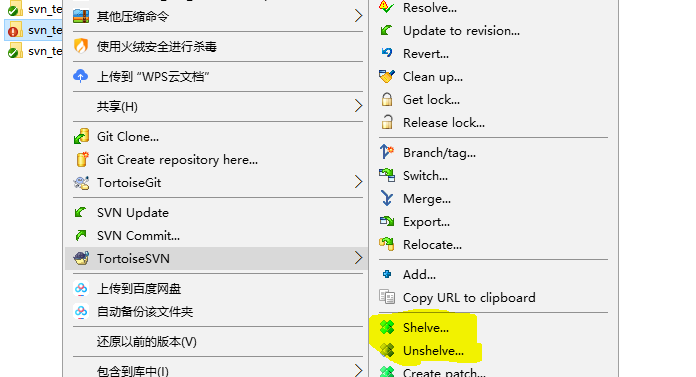

1. 使用简单
2. 目录权限控制,企业安全必备
3. 子目录CheckOut,减少不必要的文件检出
练习网站 账号lizequan 密码Mestime1231. svn提交的时候可以先查看一下修改的内容对比
2. 在commit提交之前,撤销本地修改svn->revert
3. 在commit提交之后,撤销修改,去日志中查看版本日志,然后右键有错误的版本点击Revert changes from this revision。撤销成功后,可以在commit时查看当前文件内容和错误版本的对比,看看是否恢复正常。其实日志中还是会保存着错误的版本记录。
4. 忽略文件和文件夹,按下图的操作即可,在第三步中recursively表示的是递归的意思,我这里操作的是忽略文件夹,所以还可以忽略文件夹下的所有文件
在提交的时候,会看到被忽略的会显示属性被修改。
5. 解决冲突多人修改同个文件的同一行或者无法进行合并的二进制文件(图片之类的)都会产生冲突。我在本地修改文本第5行之后update文本文件,但是也有别人修改了这一行,此时update操作会有冲突。
6. 分支,隔离线上版本和开发版本,大功能开发不想影响到其他人,自己独立开个分支去开发。svn经典目录结构
trunk(主干)
branches(分支)
tags(标签)
创建分支的方法,svn可以对子目录进行创建分支操作。
分支合并到主干,从show log 入手,在分支的版本记录上去选择要合到主干上的版本,选择Merge revision to 会出现弹窗,然后选择本地主干的目录即可。合并完成后,本地的主干分支在开发前还需要修改一下。
7 .代码暂存 代码改了很多,突然需要紧急修改一个bug,但是代码还没有写完,不能提交本地代码,代码重构了很多,突然需要发布新版本,但是代码还跑不起来,不能提交本地代码

8. 当主干和分支分别修改的内容都相差很大时,需要使用BeyondCompare软件进行合并
9. 关于merge的使用,这个功能可以将主干合并到分支,也可以将分支合并到主干。比较重要的点在使用merge功能时,一定要在合并目的地选择merge功能,而不是在数据源处选择merge。里面的from和to,很容易被字面意思搞混,容易理解成“从。。到。。”。其实可以理解为,from为左边,起始状态,to为右边,最终状态。他们之间会做diff比较,之后将to的内容更新到from。